مرکز دانش
راهنماها، مقالات و مسیرهای پیشنهادی برای انتخاب سرویس مناسب و رسیدن به خروجی لوکس و ماندگار.
مسیر پیشنهادی یادگیری
برای رسیدن به خروجی لوکس و ماندگار، ابتدا راهنماها را بخوانید، سپس سرویس مناسب را انتخاب کنید و در نهایت مقالههای تخصصی را دنبال کنید.
شروع سریع
پرسشهای رایج مرکز دانش
راهنما (Guide) با مقاله (Article) چه تفاوتی دارد؟
راهنماها مسیر تصمیمگیری و انتخاب را ساده میکنند؛ مقالهها جزئیات فنی، تجربهها و نکات کیفیت را عمیقتر توضیح میدهند.
برای پروژههای لوکس از کجا شروع کنم؟
ابتدا راهنمای انتخاب پوشش و رنگ را ببینید، سپس یک سرویس مرتبط انتخاب کنید و در نهایت مقالههای کنترل کیفیت و نگهداری را مطالعه کنید.
چطور سریع به سرویس مناسب برسم؟
در هر مقاله ستون، بخش «راهنماها و خدمات مرتبط» را دنبال کنید تا از متن مستقیم به راهنما و سرویس مرتبط برسید.
چطور از مرکز دانش استفاده کنید
با فیلترها موضوع را محدود کنید؛ سپس مقاله/راهنما را انتخاب کنید.
فیلتر موضوعی
مثلاً PVD یا صنعتی را انتخاب کنید تا سریعتر به نتیجه برسید.
مقایسهها
اگر بین چند روش مردد هستید، از بخش مقایسه شروع کنید.
سوال دارید؟
با ارسال عکس قطعه، سریعتر پیشنهاد دقیق میگیرید.
خوشههای دانشی
برای شروع سریع، یکی از مسیرهای موضوعی زیر را انتخاب کنید.
پوشش PVD
پرداختکاری و فینیش
آبکاری نیکل کروم
رنگ پودری الکترواستاتیک
پوشش E-Coat (الکتروفورتیک)
چینی بهداشتی و سرامیک
پروژههای معماری و دکور
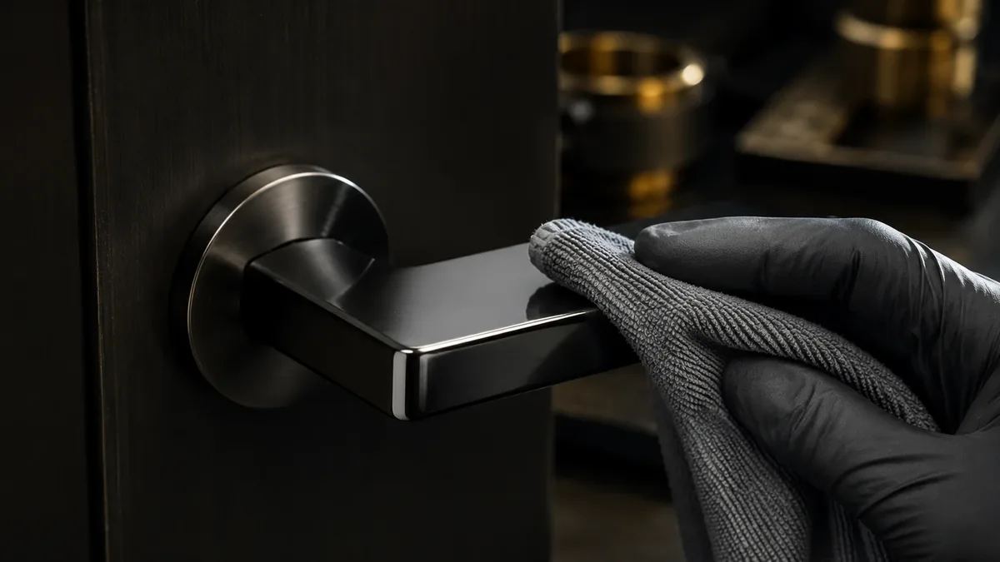
پرداختکاری قطعات برنجی: نکات مهم برای خروجی لوکس
برنج با یک پرداخت خوب واقعاً لوکس میشود. با یک پرداخت بد، همانقدر سریع افت میکند.
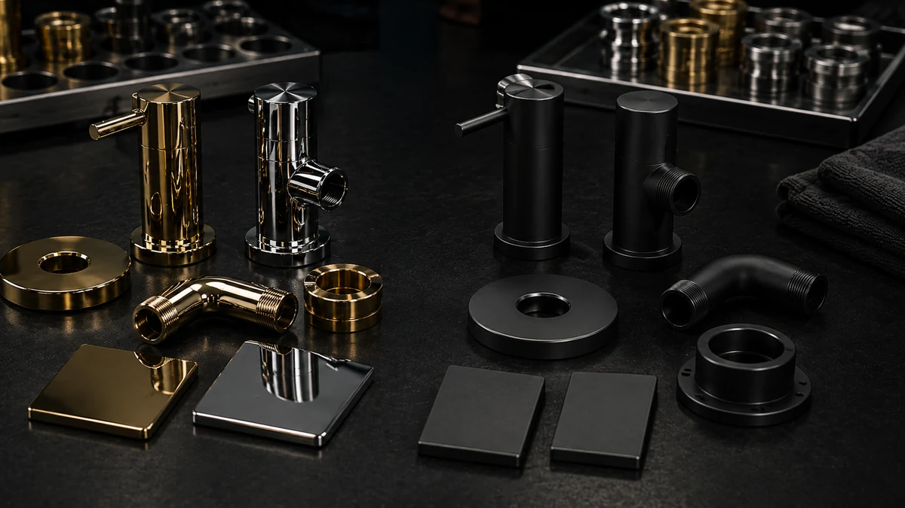
پولیش آینهای vs ساتن: کدام برای پروژه لوکس بهتر است؟
اگر نور محیط سخت است یا تماس زیاد دارید، ساتن معمولاً انتخاب منطقیتری است. اما بعضی پروژهها آینهای میخواهند.

پرداختکاری قبل از PVD: چرا نصف کیفیت کار همینجاست؟
اگر پولیش بد باشد، بهترین پوشش هم معجزه نمیکند. برای فینیش لوکس، زیرکار پادشاه است.
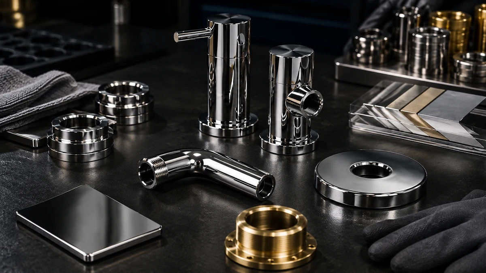
کروم تزئینی vs کروم سخت: کجا کدام مناسب است؟
هر دو اسمشان کروم است، اما هدفشان یکی نیست. اگر انتخاب اشتباه کنید، یا هزینه اضافه میدهید یا دوام نمیگیرید.
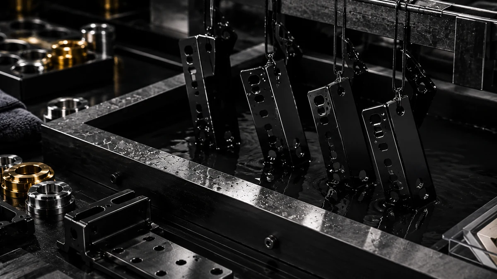
عیبیابی آبکاری: پوسته شدن، تاول و کدرشدن کروم
اگر کروم کدر شد یا آبکاری پوسته داد، قبل از تغییر وانها مسیر تمیزکاری و فعالسازی را چک کنید.
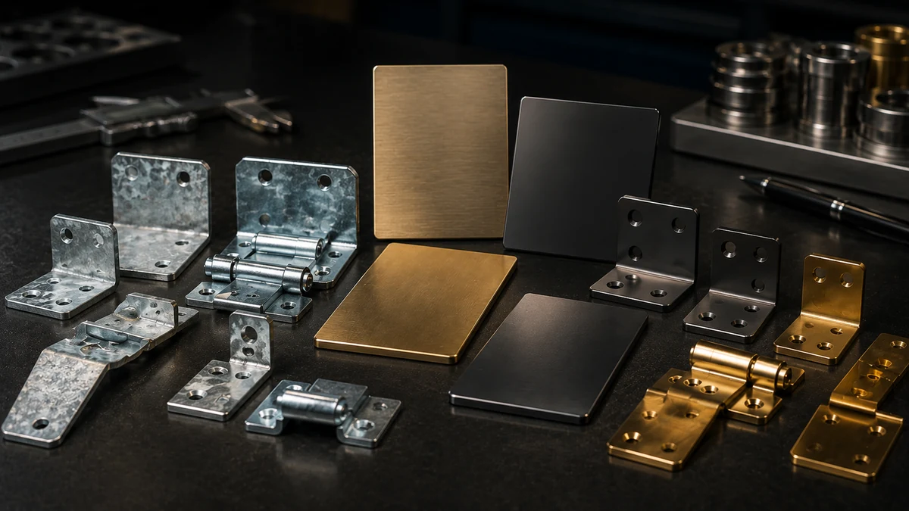
نیکل-کروم روی زاماک: چالشها و مسیر درست آبکاری
زاماک اگر درست آماده نشود، آبکاری را با پوسته شدن و حفره جواب میدهد. اینجا مسیر کمریسکتر را میخوانید.
عیبیابی PVD: رگه، لکه و پینهول از کجا میآید؟
قبل از اینکه همهچیز را گردن دستگاه بیندازید، سه چیز را چک کنید: تمیزی سطح، پولیش، و خروج گاز از قطعه.
کنترل کیفیت رنگ PVD: چرا یک رنگ در دو نور متفاوت میشود؟
اگر مشتری زیر نور فروشگاه یک چیز میبیند و در خانه چیز دیگر، احتمالاً مشکل از مدیریت نور و مرجع رنگ است نه صرفاً فرآیند.
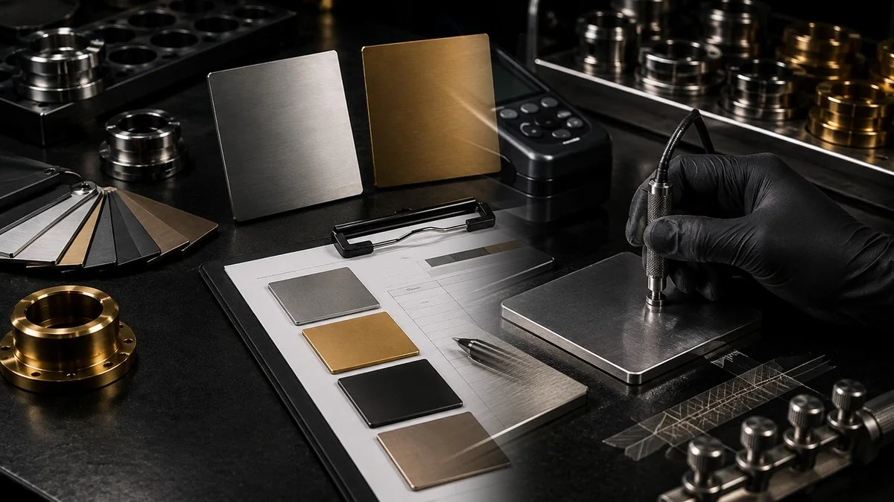
PVD برای دستگیره و یراق درب: فینیش لوکس بدون دردسر
اگر قرار است هر روز لمس شود، باید هم زیبا باشد هم مقاوم. این مقاله میگوید چه فینیشی مناسبتر است و چه چیزهایی را قبل از تولید سری چک کنید.
آبکاری سنتی نیکل-کروم: ظاهر، دوام و نکات مقایسه با PVD
نیکل-کروم هنوز در بسیاری کاربردها محبوب است. این مقاله تفاوتهای کلیدی آن با PVD را از نظر ظاهر، دوام و شرایط استفاده توضیح میدهد.
PVD روی قطعات روی و گالوانیزه: چالشها و راهحلهای عملی
قطعات روی/گالوانیزه بهدلیل واکنشپذیری و ریسک آلودگی سطحی، نیاز به آمادهسازی دقیق دارند تا PVD یکنواخت و بادوام شود.
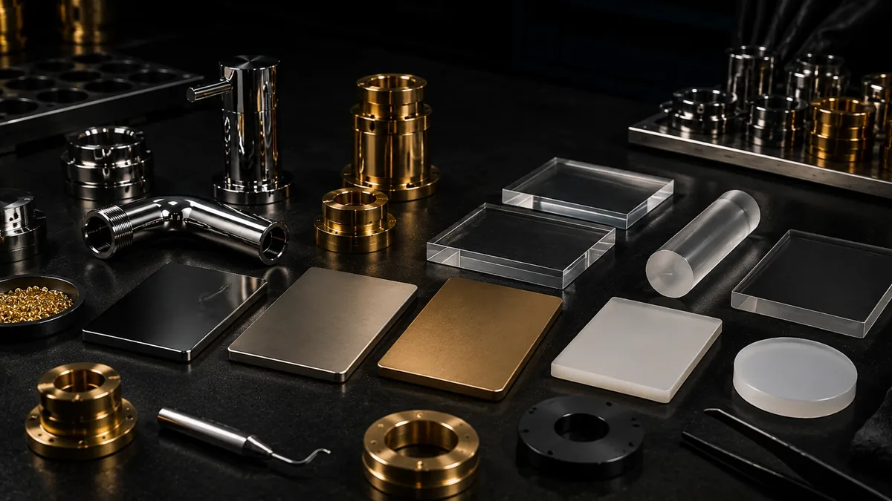
PVD روی پلاستیک PP: چرا سخت است و چه راهحلهایی وجود دارد؟
PP انرژی سطحی خیلی پایینی دارد؛ برای پوششدهی موفق معمولاً به فعالسازی سطح و لایه میانی مهندسیشده نیاز است.
PVD روی شیشه و کریستال: گزینهها، محدودیتها و کاربردهای لوکس
پوششهای PVD روی شیشه/کریستال برای جلوههای لوکس، رنگهای خاص و مقاومت سطحی استفاده میشوند؛ انتخاب روش به هدف (تزئینی/کارکردی) وابسته است.

PVD روی ABS: روشها، چسبندگی، و نکات اجرایی
پوشش PVD روی ABS ممکن است، اما مسیر اجرا معمولاً به آمادهسازی سطح و لایههای میانی نیاز دارد تا چسبندگی و دوام روی نمونه واقعی ارزیابی شود.
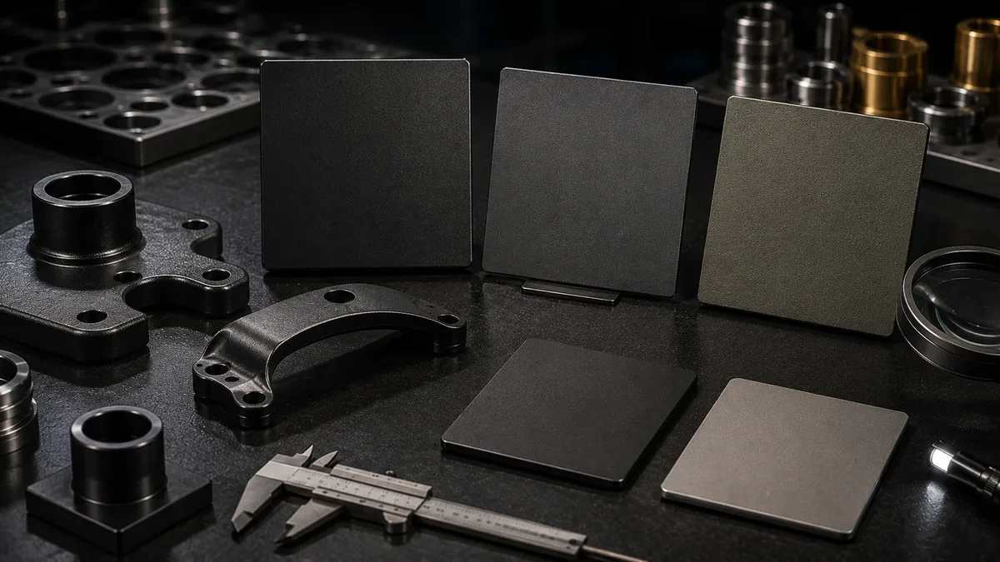
روشهای دیگر رنگکاری و پوششدهی: فورتیک (الکتروفورتیک)، آنودایز، اسپری حرارتی و…
همه پروژهها PVD نیستند. در این مقاله مسیرهای رایج مثل فورتیک/الکتروفورتیک (E-coat)، آنودایز و اسپری حرارتی را برای انتخاب بهتر مرور میکنیم.

رنگ الکترواستاتیک (پودری): مزایا، محدودیتها و کاربردها
رنگ پودری الکترواستاتیک برای مقاومت و پوشش یکنواخت در قطعات فلزی بسیار محبوب است؛ اما برای ظرافتهای لوکس و رنگهای خاص، باید درست انتخاب شود.
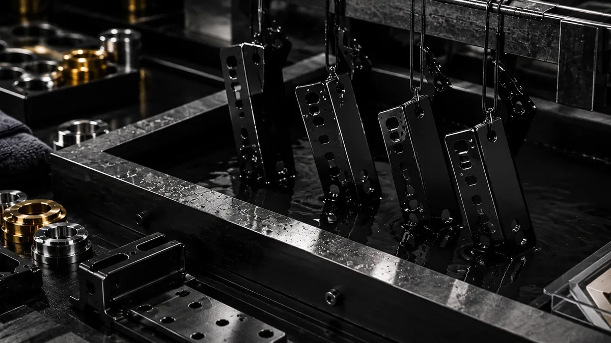
فورتیک/الکتروفورتیک (E-coat): ضدزنگ پایه برای قطعات صنعتی
الکتروفورتیک (که در بازار گاهی «فورتیک» هم گفته میشود) یک پوششدهی یکنواخت و ضدخوردگی است که مخصوصاً برای زیرکار صنعتی و تیراژ مناسب است.
رسانا یا نارسانا بودن سطح برای PVD: چه مهم است و چطور رسانا کنیم؟
بسیاری از پوششهای PVD روی سطوح نارسانا هم قابل اعمالاند، اما در برخی شرایط برای کنترل بار/بایاس یا یکنواختی، رساناکردن سطح یا فیکسچر اهمیت پیدا میکند.
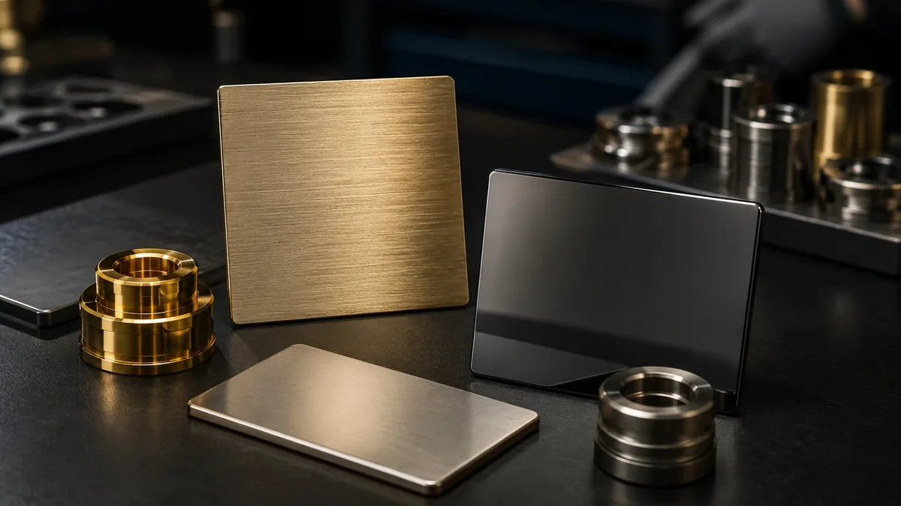
آنودایز آلومینیوم برای ظاهر لوکس: مات، ساتن و رنگهای خاص
آنودایز یکی از روشهای رایج برای آلومینیوم است و میتواند هم حفاظت سطح و هم رنگدهی/فینیش ایجاد کند؛ نتیجه به آلیاژ، آمادهسازی و فرآیند وابسته است.
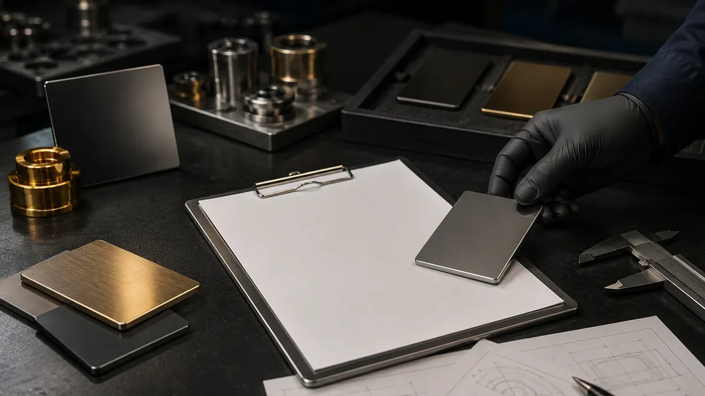
آمادهسازی سطح قبل از پوششدهی (PVD و سرامیک)
بیشتر خطاهای پوششدهی از خودِ پوشش نیست؛ از آمادهسازی سطح شروع میشود. در این مقاله مراحل کلیدی آمادهسازی برای نتیجه یکنواخت، براق و بادوام را توضیح میدهیم.
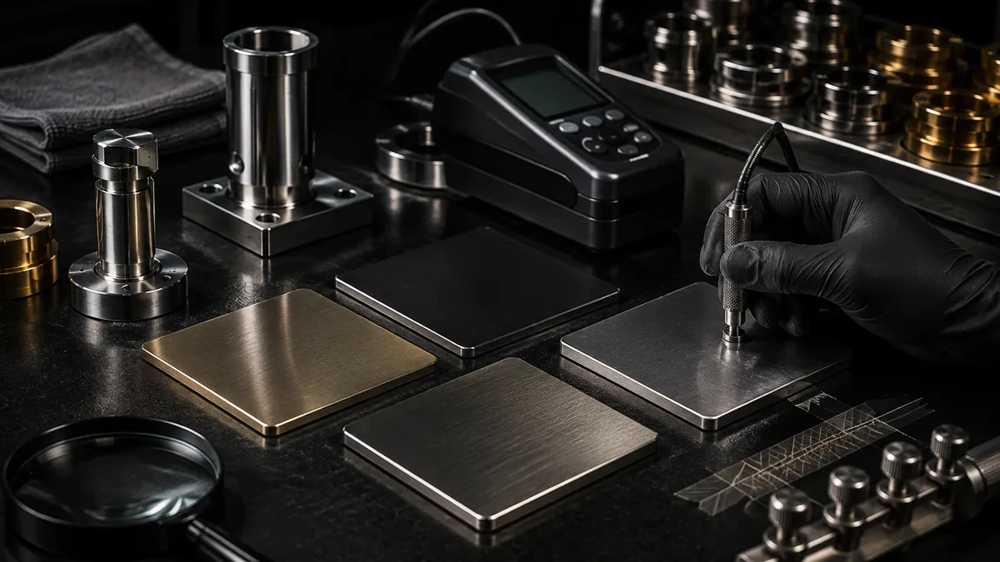
کنترل کیفیت پوششها: ضخامت، چسبندگی و مقاومت خوردگی
در پروژههای صنعتی و ساختمانی، کیفیت فقط در ظاهر خلاصه نمیشود. کنترل کیفیت کمک میکند دوام، یکنواختی و عملکرد پوشش در شرایط کاری واقعی قابل اعتماد باشد.

مقایسه PVD و سرامیک
در انتخاب بین PVD و سرامیک، سه معیار اصلی را مقایسه کنید: ظاهر و فینیش، مقاومت و شرایط کاری، و هزینه/زمان اجرای پروژه. بهترین انتخاب همان گزینهای است که با کاربری واقعی شما همخوانی دارد.
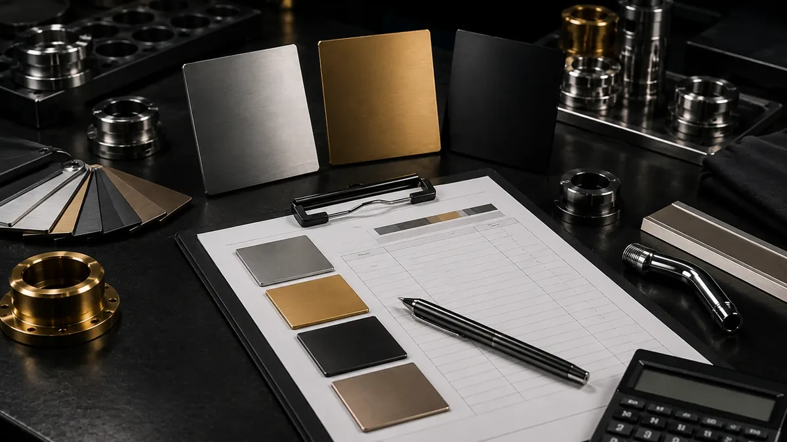
راهنمای استعلام قیمت و ثبت سفارش PVD
چه اطلاعاتی بدهید تا سریعتر قیمت دقیق و زمان تحویل دریافت کنید.
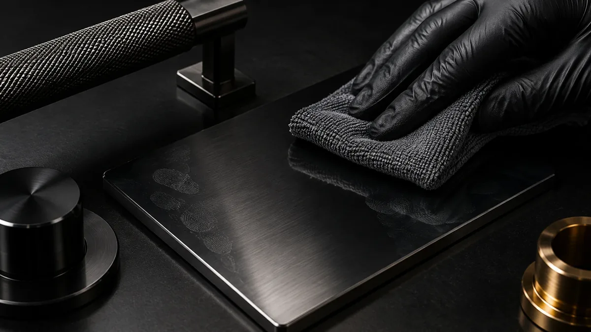
اثر انگشت روی PVD: تمیزکاری بدون خطوخش
روشهای ساده و امن برای حذف لکه و اثر انگشت روی فینیشهای لوکس.

راهنمای رنگها و فینیشهای PVD (طلایی، رزگلد، دودی و …)
انتخاب رنگ و فینیش در PVD فقط موضوع زیبایی نیست؛ به جنس قطعه، کاربری (ساختمانی/صنعتی/لوکس) و نحوه نگهداری هم وابسته است. این راهنما کمک میکند گزینه مناسبتر را انتخاب کنید.
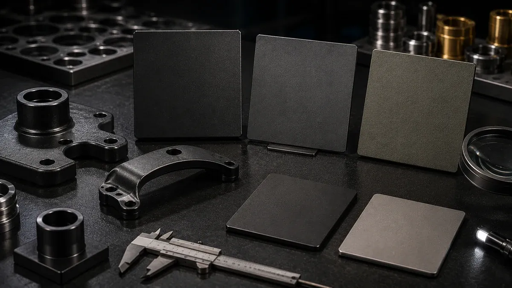
PVD در برابر آبکاری سنتی (نیکل/کروم)
کدام برای ظاهر لوکس، دوام و تیراژ بهتر است؟
PVD در برابر رنگ پودری الکترواستاتیک
مقایسه کاربرد دکوراتیو و صنعتی + محدودیتها
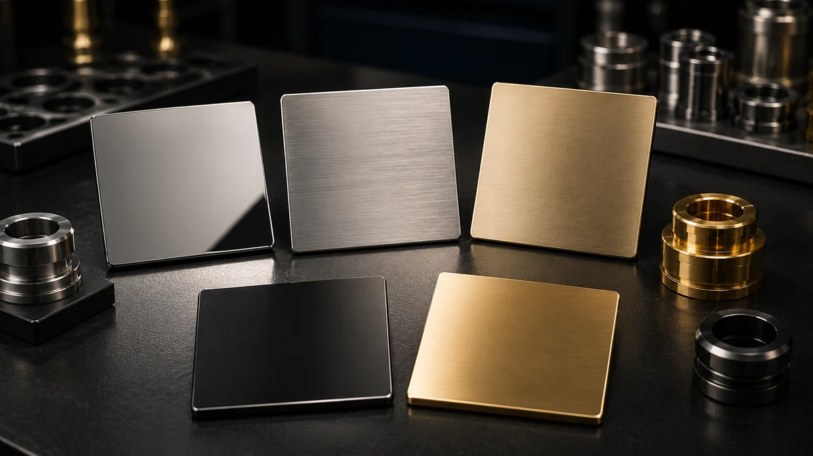
PVD در برابر آنودایز آلومینیوم
برای آلومینیوم و فینیش مات/لوکس کدام بهتر است؟
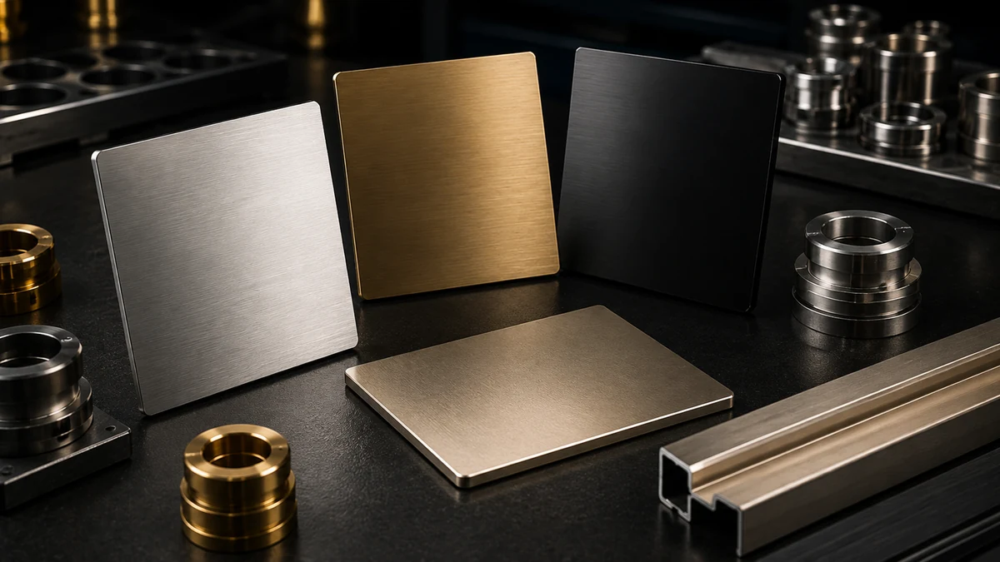
راهنمای جامع پوشش PVD (لوکس + صنعتی)
اگر میخواهید نتیجه نهایی واقعاً لوکس و بادوام باشد، این راهنما مسیر درست را به شما میدهد: از آمادهسازی سطح تا انتخاب رنگ و کنترل کیفیت.
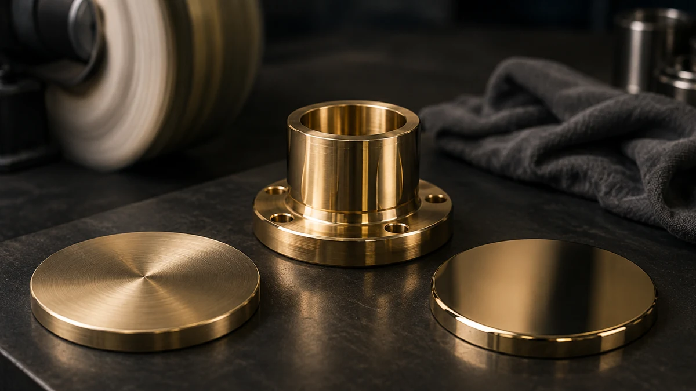
راهنمای جامع آبکاری نیکل کروم
از ظاهر براق کلاسیک تا جلوگیری از پوستهشدن و تاول. این راهنما کمک میکند کیفیت آبکاری را درست انتخاب و کنترل کنید.
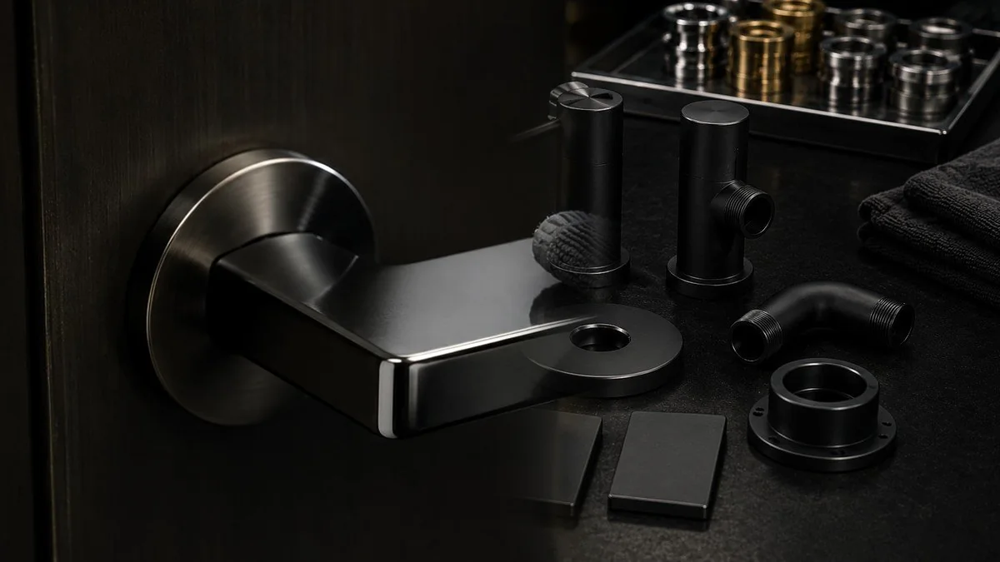
راهنمای جامع پرداختکاری و پولیش
پرداختکاری خوب یعنی پوشش نهایی خوب. این راهنما فرق فینیشها و استاندارد کار تمیز را روشن میکند.
دوام رنگ PVD دکوراتیو: طلایی، رزگلد، دودی
چه چیزهایی باعث ماندگاری بهتر رنگ میشود و چگونه انتخاب درست انجام دهیم؟
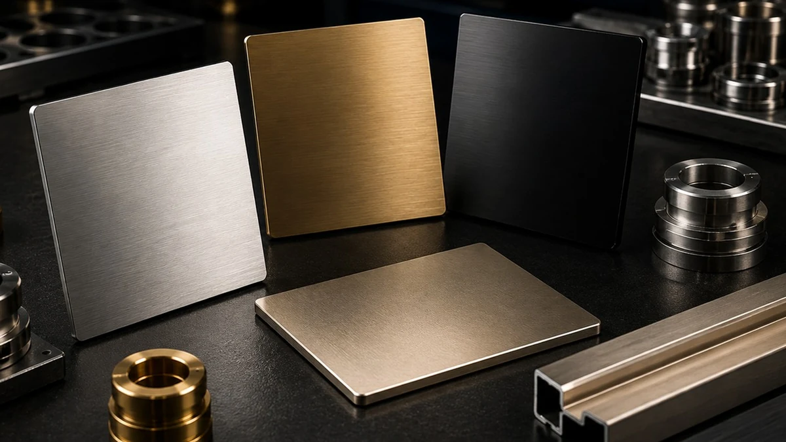
PVD Coating چیست؟
تعریف ساده، مزایا، کاربردها در صنعت، ساختمان و لوکسکاری.
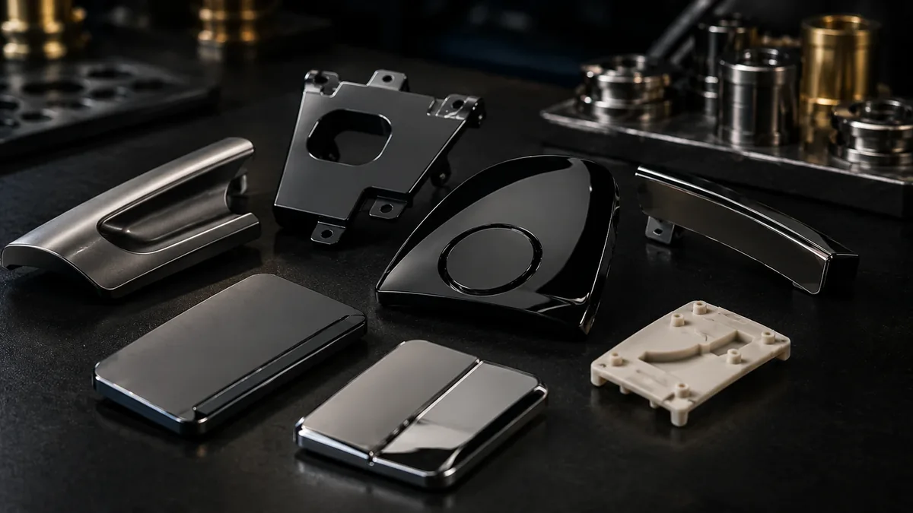
پوششدهی یراقآلات و قطعات ساختمانی در تهران
راهنمای انتخاب پوشش برای دستگیره، اتصالات، پروفیل و قطعات دکوراتیو.
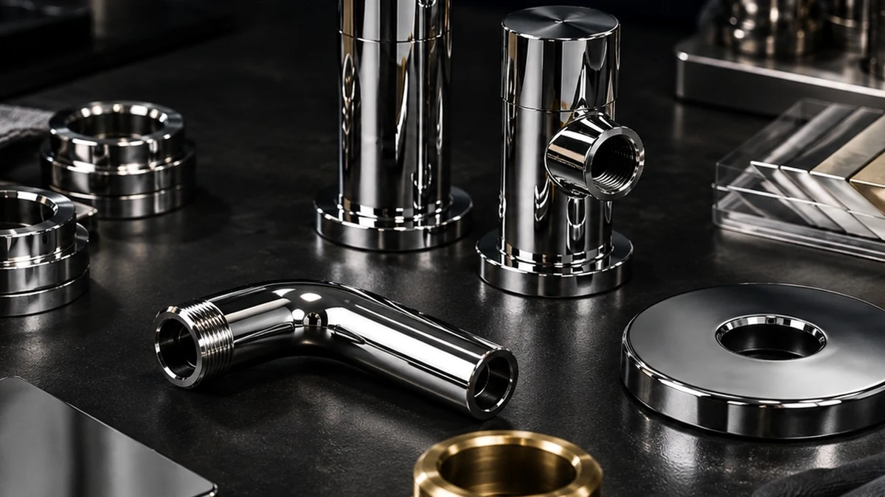
PVD برای شیرآلات لوکس
راهنمای انتخاب جنس، رنگ و فینیش برای دکوراتیو.

نگهداری و تمیزکاری PVD
روشهای درست تمیزکاری و جلوگیری از کدر شدن.
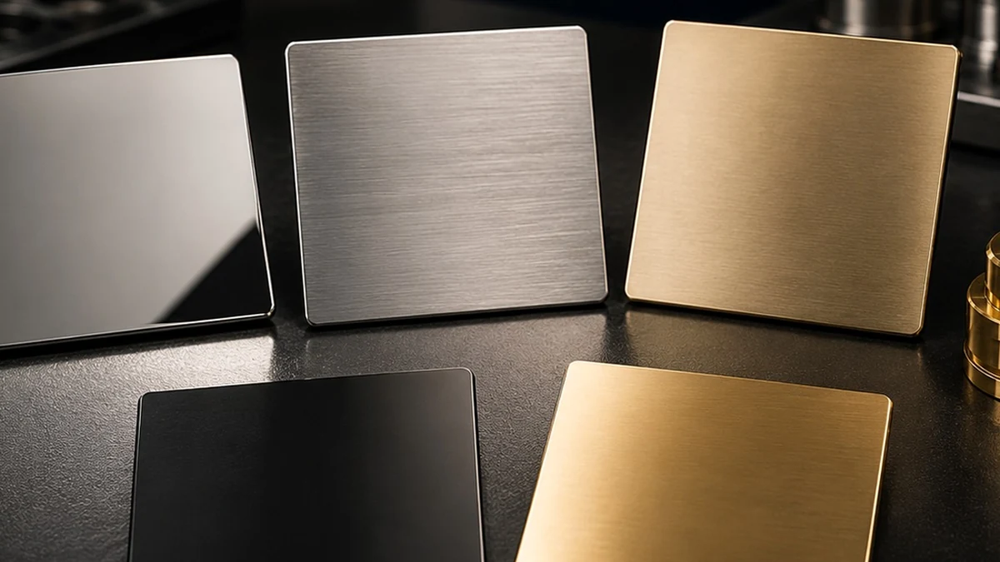
مات یا براق؟
تصمیمگیری سریع برای پروژههای پرتردد و لوکس.
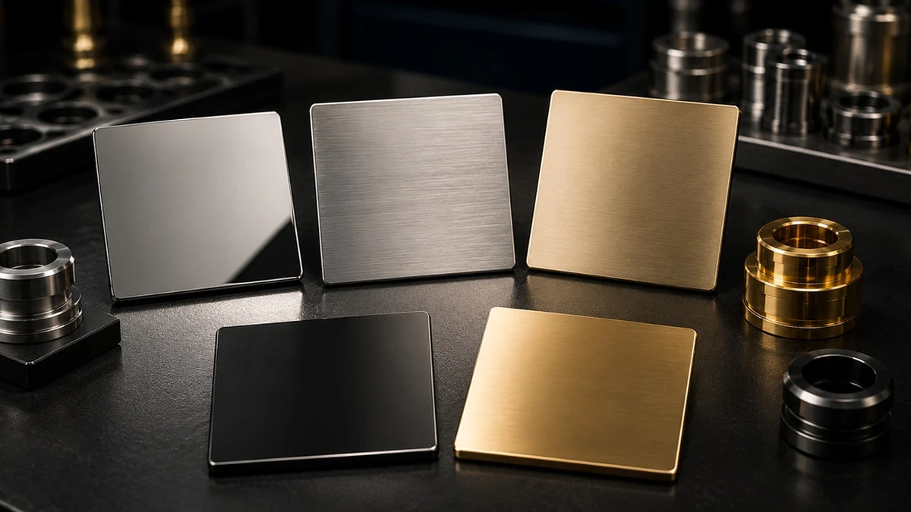
هماهنگی رنگ با دکور
طلایی، رزگلد، دودی، مشکی؛ چه زمانی کدام؟